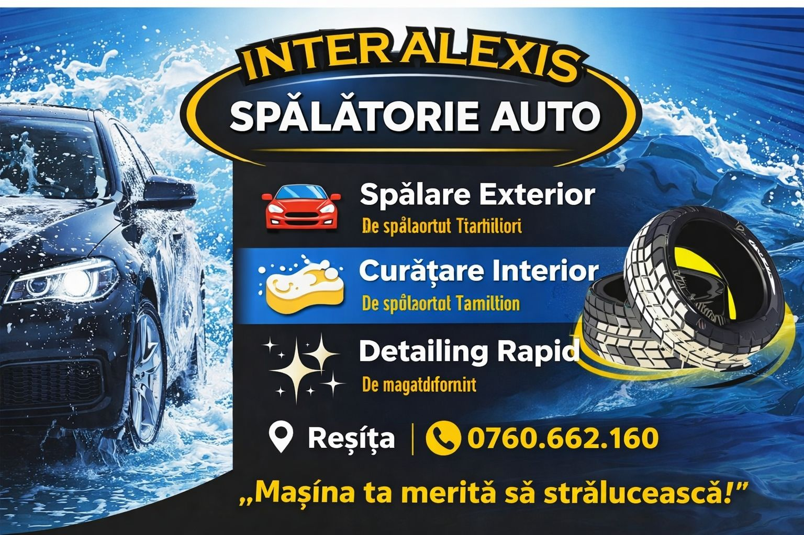
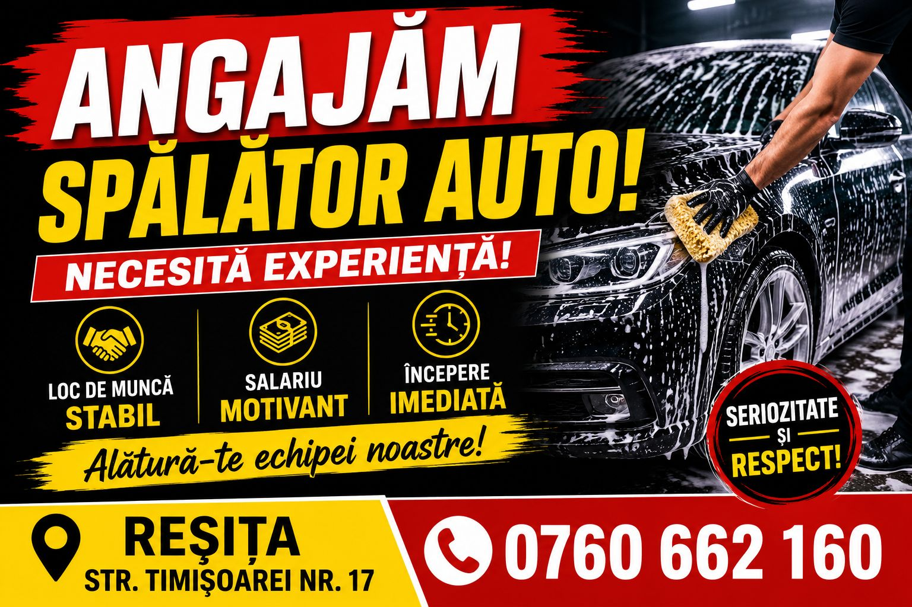
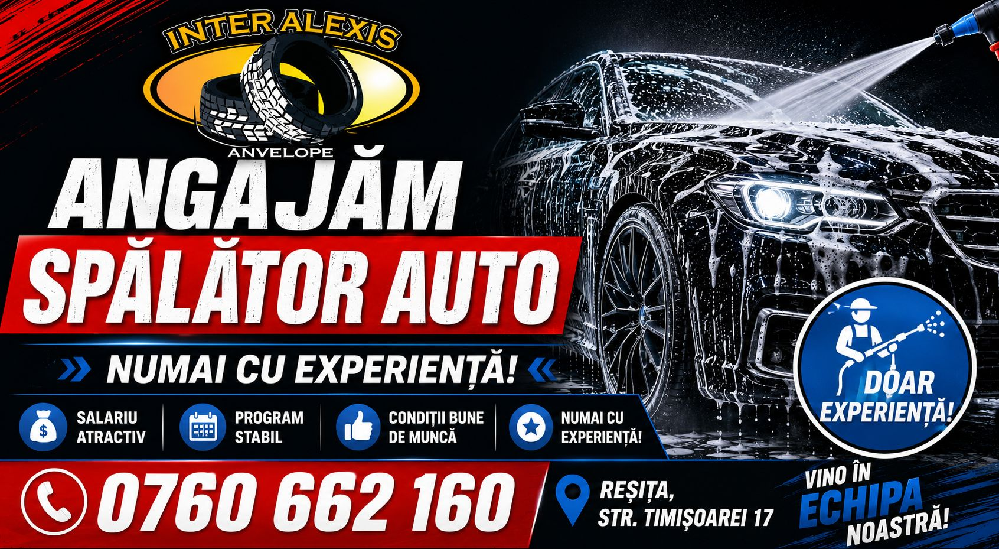

Spălare exterior
Spălare atentă la caroserie, jante și anvelope, fără zgârieturi. Mașina iese lună, din față până în spate.
Cel mai cerutLa Interalexis, pe Calea Timișoarei 17 din Reșița, spălăm auto și TIR fără zgârieturi — exterior, aspirare interior, ceară lichidă premium, plus vulcanizare și spălătorie de covoare. Mașina ta merită să strălucească.
La Spălătoria Auto Interalexis ne ocupăm de mașina ta pe Calea Timișoarei nr. 17, în Reșița. Facem spălare auto și TIR, cosmetică auto, vulcanizare și spălătorie de covoare — totul într-un singur loc, cu operatori care lucrează atent, fără grabă și fără zgârieturi.
Spălăm exteriorul cu grijă la caroserie, jante și anvelope, curățăm și aspirăm interiorul profesional, iar la final protejăm luciul cu ceară lichidă premium. De la autoturisme și SUV-uri până la cap de TIR și vehicule mari, avem loc și pentru mașina ta.
„Mașina ta merită să strălucească — îți redăm strălucirea în doar 15 minute.”
De la o spălare rapidă până la cosmetică auto completă, spălare de vehicule mari și vulcanizare — pentru autoturisme, SUV-uri și TIR.
Spălare atentă la caroserie, jante și anvelope, fără zgârieturi. Mașina iese lună, din față până în spate.
Cel mai cerutAspirare profesională, ștergere bord și plastice, geamuri curate. Interiorul revine impecabil.
Finisaj cu ceară lichidă premium pentru un luciu de durată și protecție a vopselei împotriva prafului.
Ceară premiumCap de TIR, camioane și vehicule mari — le spălăm în hală, cu spațiu și presiune pe măsură.
Vehicule mariServicii de vulcanizare pe loc — reparații și lucrări la anvelope, alături de spălătorie, ca să rezolvi totul odată.
Spălăm covoare și mochete de casă, automatizat și îngrijit — le lăsi la noi și le ridici curate.
Spălătoria Auto Interalexis · Calea Timișoarei 17, Reșița. Pentru servicii, disponibilitate și prețuri, sună la 0760 662 160 sau treci direct la locație.
Ne găsești pe Calea Timișoarei 17, în Reșița. Un telefon în avans te ajută să prinzi mai repede un loc.
Exterior, interior, cosmetică sau spălare completă — îți spunem pe loc ce se potrivește mașinii tale.
Operatorii spală atent, fără zgârieturi, aspiră interiorul și aplică ceara — auto sau TIR.
În circa 15 minute mașina iese curată și strălucitoare, gata de drum. Simplu și rapid.
Fotografii de la spălătorie și materialele noastre. Mai multe pe pagina de Facebook.



Un singur telefon și rezolvăm totul — spălare, cosmetică, vulcanizare sau spălarea covoarelor. Sună-ne și treci pe la noi pe Calea Timișoarei 17.
Spălare auto & TIR · Cosmetică auto
Vulcanizare auto · Spălătorie covoare